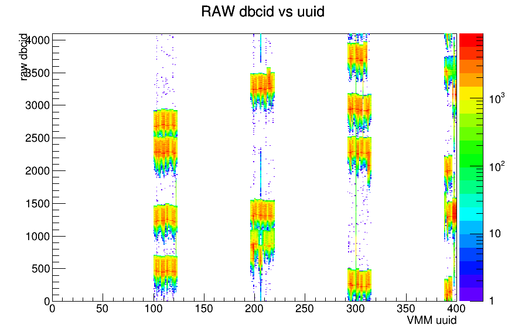
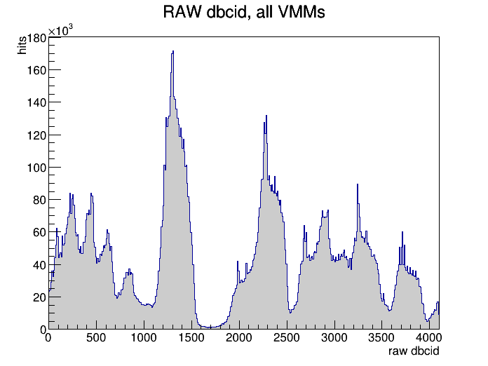
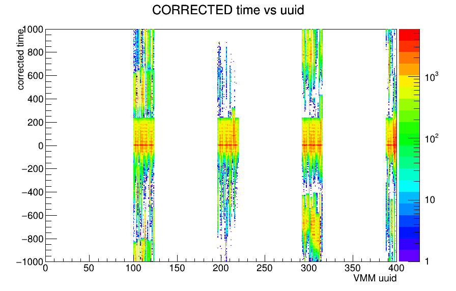
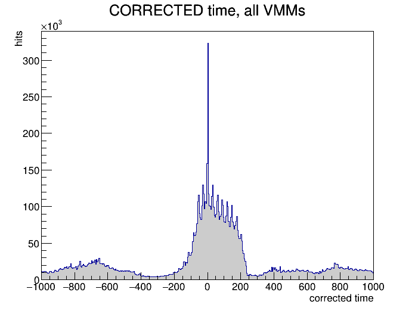
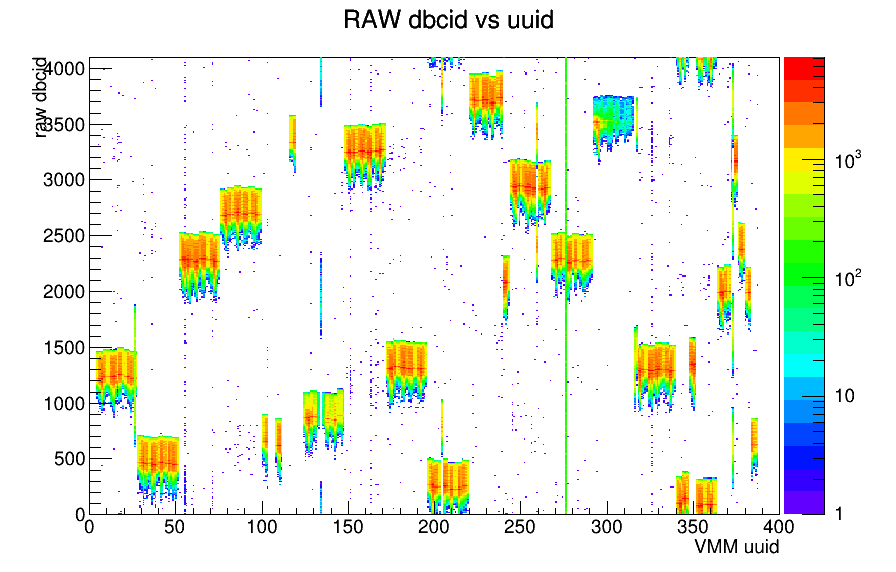
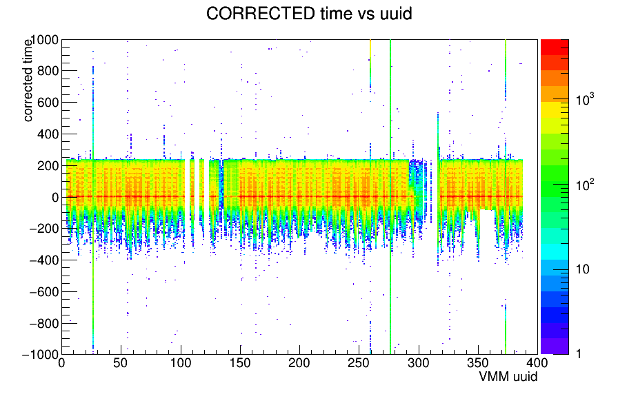
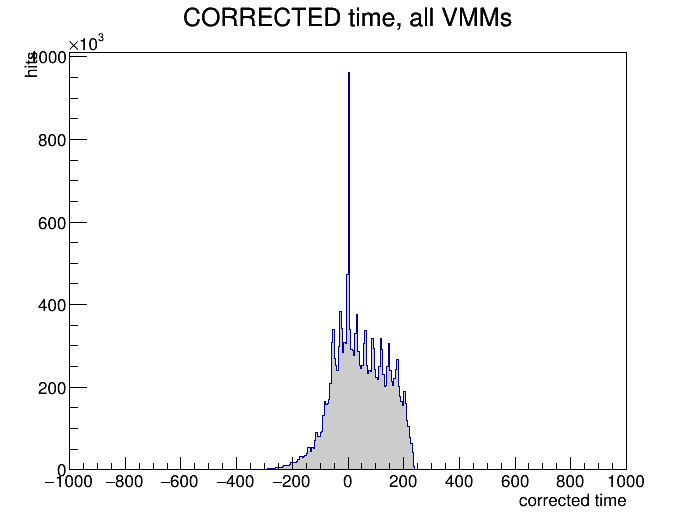
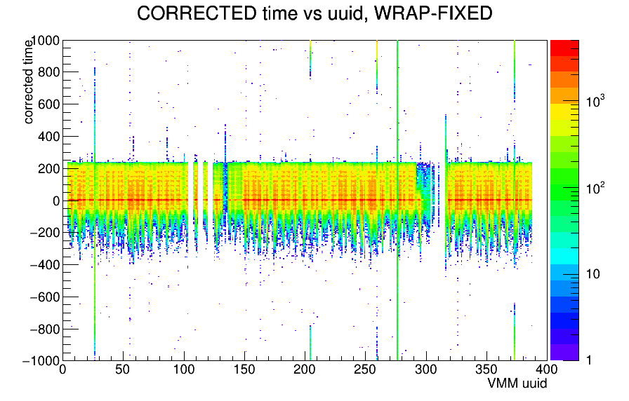
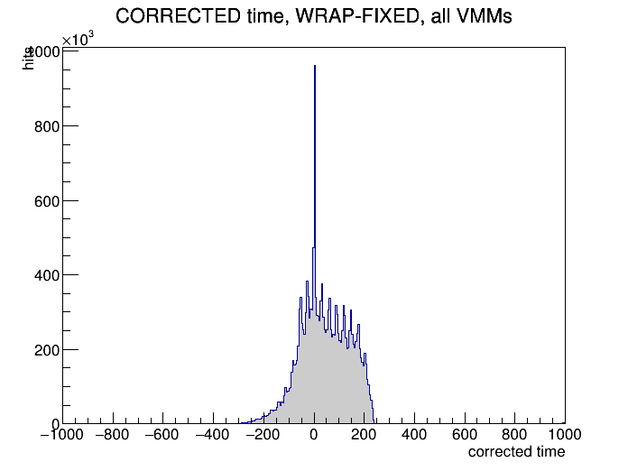

(quadrants merged)








(real quadrants)







WRAP-FIXED
same as FIXED row)




← back to StFttSimHitMaker main page
↓ 2026-09-14 update: per-run time calibration, field ON vs OFF, time-window choice
UShort_t fob = (UShort_t)mFttDb->fob( rawHit ); UShort_t uuid = rawHit->vmm() + ( StFttDb::nVMMPerFob * fob );confirmed identical, line for line, to what's actually used to key the real per-channel calibration (StRoot/StFttHitCalibMaker/StFttHitCalibMaker.cxx:103-104) -- not a separate/approximate indexing scheme.
Bug found and fixed (2026-07-22): StFttDb::quadrant() checked its "already mapped" sentinel against the wrong constant, so the fallback to the real quadrant never fired -- the per-VMM time-calibration anchor (computed earlier in the chain than hardware mapping runs) silently merged all 4 quadrants sharing a (plane,feb,vmm) into one shared anchor:
- if ( hit->quadrant() < nQuad ) // nQuad=16 (total, all 4 planes) -- wrong bound
+ if ( hit->quadrant() < nQuadPerPlane ) // =4, matches StFttDb::plane()'s own check
return hit->quadrant();
return hit->rdo() - 1;
Separately found and also fixed: HitCalibHelper::time() did dbcid - dbcidAnchor[uuid] with no handling for dbcid's 12-bit (4096) rollover -- a channel whose true peak sits near the 0/4095 edge got split into two disconnected sub-peaks by the naive subtraction. Now wraps to the shortest signed distance. The 3rd row below shows this fix on top of the quadrant fix.
Same file, same 2000 events, same code otherwise -- only StFttDb::quadrant() differs between the two rows.
| RAW dbcid vs uuid (2D) | RAW dbcid, Y-proj (1D) | CORRECTED time vs uuid (2D) | CORRECTED time, Y-proj (1D) | |
|---|---|---|---|---|
| BUG (quadrants merged) |
 |
 |
 |
 |
| FIXED (real quadrants) |
 |
|
 |
 |
| FIXED + WRAP-FIXED |
(raw dbcid unaffected -- same as FIXED row) |
(same as FIXED row) |  |
 |
HitCalibHelper's self-calibrating anchor is dbcidAnchor[uuid] = mode-of-histogram. Under the bug, that histogram was the SUM of up to 4 real quadrants' distributions sharing a (plane,feb,vmm). Checked directly (script/checkQuadrantMergeEffect.C, feb=0/vmm=0, all 4 planes, bypassing the bug by using hit->sector()/rdo() directly for ground truth):
| plane | quadA peak (n) | quadB peak (n) | quadC peak (n) | quadD peak (n) | buggy merged peak (n) | winner |
|---|---|---|---|---|---|---|
| 0 | 1218 (23,036) | 468 (20,969) | 2287 (29,672) | 2674 (26,199) | 2287 (99,876) | C |
| 1 | 658 (21,999) | 866 (17,922) | 3247 (24,573) | 1307 (23,033) | 3247 (87,527) | C |
| 2 | 262 (23,107) | 3713 (22,902) | 2939 (29,760) | 2272 (24,010) | 2939 (99,779) | C |
| 3 | 3511 (12,102) | 1398 (26,970) | 99 (27,794) | 1982 (26,206) | 99 (93,072) | C |
Not random pickup -- deterministic "highest-occupancy quadrant wins." Quadrant C has the most raw hits of the 4 in all 4 planes for this feb/vmm, and the merged anchor lands exactly on quadC's own peak every time. Quadrants A/B/D silently get corrected against quadC's anchor instead of their own, offset by anywhere from a few hundred to ~2000 dbcid units -- the direct source of the secondary bumps around ±700-800 in the buggy 1D plot above (the aggregate, across all feb/vmm/plane slices, of many individual offsets like these). Caveat: dbcid is a bounded 12-bit counter, so very large naive peak differences near the 0/4095 edge could in principle reflect wraparound rather than a true offset -- doesn't change the qualitative conclusion.
Checked directly: hit->time() (the value this bug corrupts) is read in exactly two places in the whole repo, both inside StFttClusterMaker::PassTimeCut()'s kTimeCutModeDB/kTimeCutModeCalibratedTime branches -- both unreachable when mTimeCutMode == kTimeCutModeAcceptAll, which returns true immediately without ever touching hit->time(). Since production defaulted to AcceptAll until this session's time-cut investigation changed it, this bug was silently dormant in all prior production running -- no real signal was ever lost to it, because nothing was ever cut on the value it corrupts.
Zero-field run 23063028, 150 events, only the FTT time cut changed:
| StFttClusterMaker time cut | V clusters | H clusters | H/V | FTT points |
|---|---|---|---|---|
| mode 2, calibrated time [-40,100] | 165 | 0 | 0.000 | 752 |
| mode 1, AcceptAll | 5856 | 5838 | 0.997 | 20416 |
Field-on data does not show this (H and V identical to 1%).
A hit gets time = -4097 (always cut) until its VMM is "ready":
- return ( ... dbcidHist[uuid].size() > MIN_BCID_SAMPLES ); // number of DISTINCT dbcid values + return ( ... nSamples[uuid] > MIN_BCID_SAMPLES ); // number of hits
| FTT hits / event | hits / VMM | distinct dbcid / VMM | VMMs ready (H / V / dH / dV) | |
|---|---|---|---|---|
| field ON 23081049, 100 evt | 10,620 | ~2,600 | ~300 | 127/128, 120/120, 63/64, 56/60 |
| field OFF 23063028, 300 evt | 339 | ~212 | ~21 | 0/128, 1/120, 1/64, 2/61 |
Fixed (samples counted; anchor argmax kept, now updated incrementally). Effect on field-on run 23081049, 300 events, window [-40,100]:
| uncalibrated H hits | in window H / V / dH / dV | |
|---|---|---|
| before | 106,947 | 45.1 / 45.3 / 45.9 / 45.5 % |
| after | 25,571 | 49.1 / 48.8 / 48.7 / 48.2 % |
VMM anchors are reset at random at every run start, so they must be measured per run. Measuring them once from enough events removes the per-file warm-up entirely.
All zero-field runs are now calibrated (2026-09-21, one condor job per run, script/submit_fttcal.pl + script/runfttcal, one MuDst per run read in place):
| dataset | calibrated | no FTT data | QA table | plots | files |
|---|---|---|---|---|---|
| zero field 2022 | 49 runs | 3 runs | fttDataWindow.2022.qa.txt | png/ (all runs in one page) | zf2022/ |
| zero field 2024 | 12 runs | 1 run | fttDataWindow.2024.qa.txt | png/ | zf2024/ |
Each dataset directory holds fttDataWindow.<run>.txt (the calibration), qa/ (one QA line per run, plus 0_header.qa so cat *.qa prints a header first), png/ QA plots, and empty/ for runs with no usable FTT data — those are kept OUT of the calibration directory on purpose: such a file is syntactically valid but full of anchor -1, and a consumer that loaded it would reject every hit of that run. The per-VMM dbcid histograms (root/, 25 MB) and the condor logs are not copied here; they stay in fttcal/ in the working area.
Columns: run, date, time, nFiles, events read, raw FTT hits, then VMM counts (nOK, noisy = noisy-FOB but usable, fFob = anchor taken from the FOB median, lowS = too few hits, rej = failed the quality cut, dead), then the fraction of hits inside the window (all, H, V, diagonal H, diagonal V) and the stop reason.
stop = endOfInput does NOT mean "needs more events". It means the file ended before 95% of active VMMs were calibrated, and it covers two different situations:
2024 needs a look before use: its in-window fraction is 0.42 against 0.89 for 2022, worst on the diagonal-H strips (0.32). With per-VMM anchors applied, that says the [-65,100] window sits much less well on the 2024 signal than on 2022.
# cols 1-5 -> DB: uuid mode min max anchor ; cols 6+ QA only 0 0 -65 100 528 0 2575 1516.0 0.000 0.589 0 -81 227 1 0 -65 100 527 0 4908 2906.0 0.000 0.592 0 -124 221
| run | events needed | VMM ok | noisy, anchor FOB-consistent | rejected | no hits | in window [-65,100] H / V / dH / dV |
|---|---|---|---|---|---|---|
| field ON 23081049 | 200 | 362 | 0 | 10 | 12 | 0.571 / 0.567 / 0.568 / 0.561 |
| field OFF 23063028 | 1000 | 352 | 12 | 5 | 11 | 0.950 / 0.910 / 0.936 / 0.831 |
| QA field ON 23081049 | QA field OFF 23063028 |
|---|---|
 |
 |
Zero-field run 23063028, 100 events, window [-40,100]:
| entry | anchors | in window H / V / dH / dV |
|---|---|---|
| stamped for this run | used | 94.6 / 90.9 / 93.3 / 82.0 % |
| stamped for another run | refused | 1.0 / 5.7 / 2.0 / 14.6 % |
| current DB (unstamped) | ignored | 1.0 / 5.7 / 2.0 / 14.6 % |
A local fttDataWindow/fttDataWindow.<run>.txt overrides the DB (like vmm_map.dat). Nothing has been written to the DB yet.
Corrected time = dbcid - per-run anchor, all calibrated VMMs (script/plotFttCorrectedTime.C).
| field ON 23081049 (2.09M hits) | field OFF 23063028 (0.32M hits) | unit area, log |
|---|---|---|
 |
 |
 |
| 1-tick zoom: data and pileup background | periodogram (red: 40 / 9.383) |
|---|---|
 |
 |
Pileup at time t is taken from the same phase in the neighbouring crossings: bg(t) = mean of counts at t + k×4.263, k = ±1..±6, interpolated between ticks, excluding neighbours inside the in-time crossing (|t + k×4.263| ≤ 3). A linear slope of the plateau cancels. Signal = hits - bg. signal fraction = signal / hits in window; signal kept = signal relative to the DB window [-65,100]. (script/checkFttTimeComb.C)
| window | field OFF 23063028 | field ON 23081049 | ||||
|---|---|---|---|---|---|---|
| inside | signal fraction | signal kept | inside | signal fraction | signal kept | |
| [-1, 1] | 0.725 | 0.991 | 0.957 | 0.059 | 0.757 | 0.816 |
| [-1, 2] | 0.745 | 0.990 | 0.982 | 0.061 | 0.753 | 0.836 |
| [-1, 3] | 0.752 | 0.989 | 0.991 | 0.063 | 0.723 | 0.828 |
| [-3, 3] | 0.757 | 0.986 | 0.995 | 0.065 | 0.689 | 0.814 |
| [-10, 20] | 0.821 | 0.940 | 1.028 | 0.156 | 0.310 | 0.884 |
| [-30, 60] | 0.864 | 0.867 | 0.998 | 0.363 | 0.144 | 0.957 |
| [-40, 100] (afterburner) | 0.900 | 0.829 | 0.994 | 0.504 | 0.100 | 0.921 |
| [-65, 100] (DB) | 0.913 | 0.822 | 1 | 0.577 | 0.095 | 1 |
| [-100, 150] | 0.946 | 0.787 | 0.992 | 0.771 | 0.066 | 0.928 |
The [-1,3] window proposed above was tested against the loose [-65,100] window on real production output: four afterburner campaigns, 10 files each, zero field (run 23063028) and reversed full field (run 23081015), all with per-run per-VMM anchors (fttDataWindow/fttDataWindow.<run>.txt, shipped to the jobs), calibrated-time cut mode, and the FST gap fix, FST mirror and FTT X/Y mirror all ON. Only the window differs within each field setting.
The metric is how well tracks fitted without sTGC hits find those hits, measured with the FST-blind diagnostic (the track knows no FTT hit when the search is made). Note the diagnostic is filled once per track TYPE (Global, BLC, Primary, FwdVtx, BLCVtx), so excess and purity mix them; only the usage fraction is Global-only: excess = peak over local sideband at the projection point, purity = background-subtracted peak entries / all matched entries, usage = fraction of Global tracks with a hit used on an FTT plane. One line per campaign from script/fttMatchSummary.C.
| campaign | window | excess V | excess H | purity | FTT usage top | FTT usage bottom | tracks/event | <χ²> |
|---|---|---|---|---|---|---|---|---|
| zero field | [-65,100] | 1.811 | 1.481 | 23.3% | 17.7% | 4.8% | 17.56 | 11.46 |
| zero field | [-1,3] | 1.838 | 1.507 | 23.1% | 16.9% | 4.6% | 17.56 | 11.26 |
| field on | [-65,100] | 1.043 | 1.036 | 10.5% | 8.7% | 7.8% | 60.96 | 17.59 |
| field on | [-1,3] | 1.361 | 1.308 | 16.2% | 8.1% | 7.6% | 61.02 | 15.05 |
Fitting the background-subtracted peak (Gaussian, |d|<1 cm) shows the genuine FST→sTGC match is not a sharp spike:
| sample | disk0 V | disk0 H | disk1 V | disk1 H |
|---|---|---|---|---|
| field on, loose | σ 0.12 | σ 0.05 | σ 0.09 | σ 0.05 |
| field on, tight | σ 0.45 | σ 0.32 | σ 0.42 | σ 0.32 |
| zero field, loose | σ 0.65 | σ 0.38 | σ 0.48 | σ 0.50 |
| zero field, tight | σ 0.63 | σ 0.33 | σ 0.48 | σ 0.50 |
Zero field gives the same width with either window, σ = 3-6 mm, and field-on with the tight window agrees with it. Field-on with the loose window is the odd one out: an artificially narrow 0.5-1.2 mm core. The reason is the sideband: with 6.6× more pileup the local background window (1-3 cm) contains a large part of the broad signal itself, so subtracting it removes real signal and leaves only the narrow core. The tight window lowers the pileup until the broad component stands clear.
So the +41% is recovered signal, not new hits and not better clusters. The excess ratio (1.04 → 1.36), the 6.6× background drop and <χ²> 17.6 → 15.1 are the definition-independent statements; the purity numbers move partly because the loose-window measurement under-counts its own signal.
The real width is worth its own look. A 3-6 mm match width is much larger than the sTGC strip pitch, so it is dominated by FTT position/alignment plus the FST-only projection. In zero field the fitted peak centres are also offset from zero, per disk and per orientation: disk0 H +4.4 mm, disk1 H +1.7 mm, disk3 H -2.3 mm, disk0 V -1.5 mm, disks 1-2 V consistent with 0. Those are sTGC alignment offsets, measured with straight tracks and no field.
All four campaigns ran with the FST 1° gap fix, the FST wedge mirror and the FTT X/Y mirror ON together, so these numbers do not separate the window from the geometry corrections, and they do not say what the FST wedge flip or the FTT X/Y flip is worth on its own. A dedicated zero-field A/B of the three switches at fixed [-1,3] window is the next measurement — zero field is the better place for it, since its excess (1.8) and purity (23%) are far above the field-on values, and straight tracks make a geometry error show up directly.